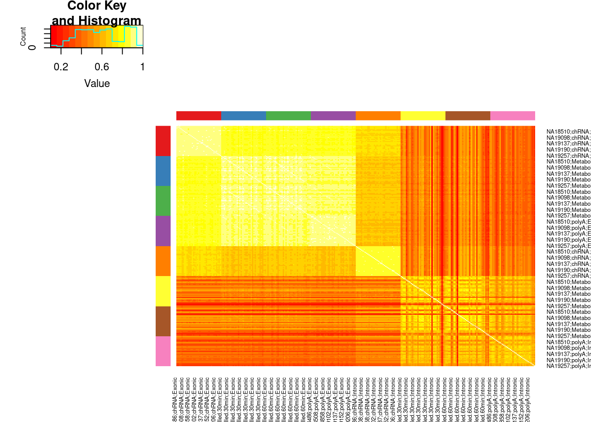
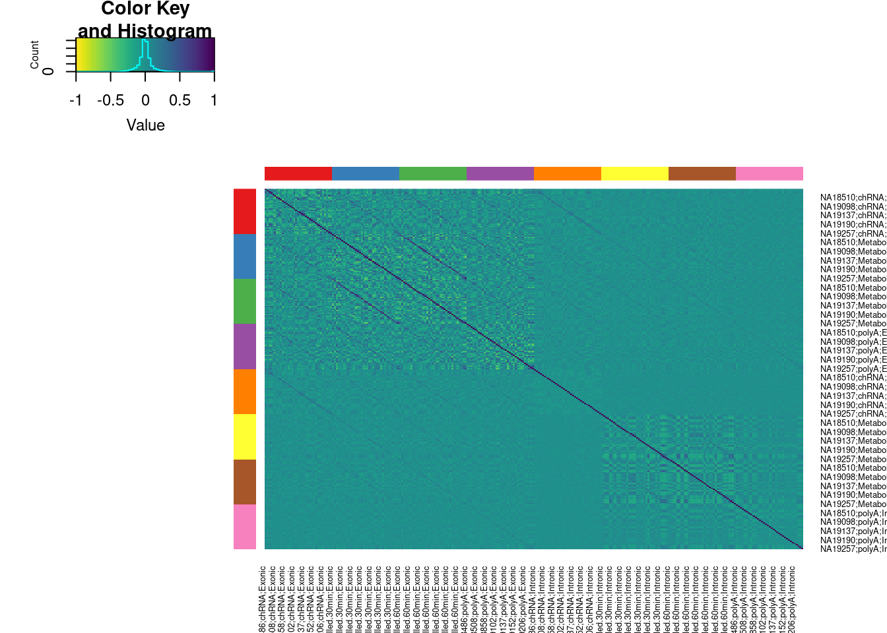

20220928_Explore_IntronSumPhenotype
Last updated: 2022-09-29
Checks: 6 1
Knit directory: ChromatinSplicingQTLs/analysis/
This reproducible R Markdown analysis was created with workflowr (version 1.6.2). The Checks tab describes the reproducibility checks that were applied when the results were created. The Past versions tab lists the development history.
The R Markdown is untracked by Git. To know which version of the R Markdown file created these results, you’ll want to first commit it to the Git repo. If you’re still working on the analysis, you can ignore this warning. When you’re finished, you can run wflow_publish to commit the R Markdown file and build the HTML.
Great job! The global environment was empty. Objects defined in the global environment can affect the analysis in your R Markdown file in unknown ways. For reproduciblity it’s best to always run the code in an empty environment.
The command set.seed(20191126) was run prior to running the code in the R Markdown file. Setting a seed ensures that any results that rely on randomness, e.g. subsampling or permutations, are reproducible.
Great job! Recording the operating system, R version, and package versions is critical for reproducibility.
Nice! There were no cached chunks for this analysis, so you can be confident that you successfully produced the results during this run.
Great job! Using relative paths to the files within your workflowr project makes it easier to run your code on other machines.
Great! You are using Git for version control. Tracking code development and connecting the code version to the results is critical for reproducibility.
The results in this page were generated with repository version ce8b35d. See the Past versions tab to see a history of the changes made to the R Markdown and HTML files.
Note that you need to be careful to ensure that all relevant files for the analysis have been committed to Git prior to generating the results (you can use wflow_publish or wflow_git_commit). workflowr only checks the R Markdown file, but you know if there are other scripts or data files that it depends on. Below is the status of the Git repository when the results were generated:
Ignored files:
Ignored: .DS_Store
Ignored: .Rhistory
Ignored: .Rproj.user/
Ignored: analysis/.Rhistory
Ignored: code/.DS_Store
Ignored: code/.RData
Ignored: code/._.DS_Store
Ignored: code/._README.md
Ignored: code/._report.html
Ignored: code/.ipynb_checkpoints/
Ignored: code/.snakemake/
Ignored: code/APA_Processing/
Ignored: code/Alignments/
Ignored: code/ChromHMM/
Ignored: code/ENCODE/
Ignored: code/ExpressionAnalysis/
Ignored: code/FastqFastp/
Ignored: code/FastqFastpSE/
Ignored: code/Genotypes/
Ignored: code/IntronSlopes/
Ignored: code/Misc/
Ignored: code/MiscCountTables/
Ignored: code/Multiqc/
Ignored: code/Multiqc_chRNA/
Ignored: code/NonCodingRNA_annotation/
Ignored: code/PeakCalling/
Ignored: code/Phenotypes/
Ignored: code/PlotGruberQTLs/
Ignored: code/PlotQTLs/
Ignored: code/ProCapAnalysis/
Ignored: code/QC/
Ignored: code/QTL_SNP_Enrichment/
Ignored: code/QTLs/
Ignored: code/ReferenceGenome/
Ignored: code/Rplots.pdf
Ignored: code/Session.vim
Ignored: code/SplicingAnalysis/
Ignored: code/TODO
Ignored: code/Tehranchi/
Ignored: code/bigwigs/
Ignored: code/bigwigs_FromNonWASPFilteredReads/
Ignored: code/config/.DS_Store
Ignored: code/config/._.DS_Store
Ignored: code/config/.ipynb_checkpoints/
Ignored: code/debug.ipynb
Ignored: code/debug_python.ipynb
Ignored: code/deepTools/
Ignored: code/featureCounts/
Ignored: code/gwas_summary_stats/
Ignored: code/hyprcoloc/
Ignored: code/igv_session.xml
Ignored: code/log
Ignored: code/logs/
Ignored: code/notebooks/.ipynb_checkpoints/
Ignored: code/rules/.ipynb_checkpoints/
Ignored: code/rules/OldRules/
Ignored: code/rules/notebooks/
Ignored: code/scratch/
Ignored: code/scripts/.ipynb_checkpoints/
Ignored: code/scripts/GTFtools_0.8.0/
Ignored: code/scripts/__pycache__/
Ignored: code/scripts/liftOverBedpe/liftOverBedpe.py
Ignored: code/snakemake.log
Ignored: code/snakemake.sbatch.log
Ignored: data/.DS_Store
Ignored: data/._.DS_Store
Ignored: data/._20220414203249_JASPAR2022_combined_matrices_25818_jaspar.txt
Ignored: data/GWAS_catalog_summary_stats_sources/._list_gwas_summary_statistics_6_Apr_2022-10.csv
Ignored: data/GWAS_catalog_summary_stats_sources/._list_gwas_summary_statistics_6_Apr_2022-11.csv
Ignored: data/GWAS_catalog_summary_stats_sources/._list_gwas_summary_statistics_6_Apr_2022-2.csv
Ignored: data/GWAS_catalog_summary_stats_sources/._list_gwas_summary_statistics_6_Apr_2022-3.csv
Ignored: data/GWAS_catalog_summary_stats_sources/._list_gwas_summary_statistics_6_Apr_2022-4.csv
Ignored: data/GWAS_catalog_summary_stats_sources/._list_gwas_summary_statistics_6_Apr_2022-5.csv
Ignored: data/GWAS_catalog_summary_stats_sources/._list_gwas_summary_statistics_6_Apr_2022-6.csv
Ignored: data/GWAS_catalog_summary_stats_sources/._list_gwas_summary_statistics_6_Apr_2022-7.csv
Ignored: data/GWAS_catalog_summary_stats_sources/._list_gwas_summary_statistics_6_Apr_2022-8.csv
Ignored: data/GWAS_catalog_summary_stats_sources/._list_gwas_summary_statistics_6_Apr_2022.csv
Untracked files:
Untracked: analysis/20220928_ExploreIntronSum.Rmd
Untracked: code/snakemake_profiles/slurm/__pycache__/
Unstaged changes:
Modified: code/scripts/GenometracksByGenotype
Note that any generated files, e.g. HTML, png, CSS, etc., are not included in this status report because it is ok for generated content to have uncommitted changes.
There are no past versions. Publish this analysis with wflow_publish() to start tracking its development.
Intro
Yang had the idea of summing all intronic reads across a gene as a measure of transcriptional output, to help us interpret the mechanistic nature of eQTLs that may effect intron retention, versus those that are actually picking up transcriptional eQTL effects. Carlos made a phenotype table that is as simple as the sum of the intron conuts for each gene. Here I will explroe that phenotype table, just to get some intuitions on how it correlates to intron retention, vs polyA gene exonic expression, vs chRNA exonic gene expression, etc, before we go about QTL mapping and trying to interpret the QTLs
library(tidyverse)── Attaching packages ─────────────────────────────────────── tidyverse 1.3.0 ──✔ ggplot2 3.3.6 ✔ purrr 0.3.4
✔ tibble 3.1.7 ✔ dplyr 1.0.9
✔ tidyr 1.2.0 ✔ stringr 1.4.0
✔ readr 1.3.1 ✔ forcats 0.4.0── Conflicts ────────────────────────────────────────── tidyverse_conflicts() ──
✖ dplyr::filter() masks stats::filter()
✖ dplyr::lag() masks stats::lag()library(edgeR)Loading required package: limmalibrary(gplots)
Attaching package: 'gplots'The following object is masked from 'package:stats':
lowesslibrary(RColorBrewer)
library(viridis)Loading required package: viridisLiteConvertToColorVector <- function(Vector, PalletteString="Set1"){
ConversionKey <- setNames(brewer.pal(length(unique(Vector)), PalletteString), unique(Vector))[1:length(unique(Vector))]
ColorVector <- recode(Vector, !!!ConversionKey)
return( list(Key=ConversionKey, ColorVector=ColorVector))
}
PlotColorKey <- function(NamedColorLabelVector){
data.frame(Colors=NamedColorLabelVector) %>%
rownames_to_column("Label") %>%
distinct() %>%
mutate(row_number=row_number()) %>%
ggplot(aes(x=1, vjust=row_number, label=Label, color=Colors)) +
geom_text(y=Inf) +
scale_color_identity() +
theme_void()
}
dat <- Sys.glob("../code/SplicingAnalysis/GeneIntronCounts/*.GeneIntronCounts.bed.gz") %>%
setNames(str_replace(., "../code/SplicingAnalysis/GeneIntronCounts/(.+?).GeneIntronCounts.bed.gz", "\\1")) %>%
lapply(read_tsv) %>%
bind_rows(.id="dataset")Parsed with column specification:
cols(
.default = col_double(),
Chr = col_character(),
pid = col_character(),
gid = col_character(),
strand = col_character()
)See spec(...) for full column specifications.Parsed with column specification:
cols(
.default = col_double(),
Chr = col_character(),
pid = col_character(),
gid = col_character(),
strand = col_character()
)See spec(...) for full column specifications.Parsed with column specification:
cols(
.default = col_double(),
Chr = col_character(),
pid = col_character(),
gid = col_character(),
strand = col_character()
)See spec(...) for full column specifications.Parsed with column specification:
cols(
.default = col_double(),
Chr = col_character(),
pid = col_character(),
gid = col_character(),
strand = col_character()
)See spec(...) for full column specifications.dat %>%
count(dataset)# A tibble: 4 × 2
dataset n
<chr> <int>
1 MetabolicLabelled.30min 22279
2 MetabolicLabelled.60min 22669
3 chRNA 29560
4 polyA 27213dat %>%
summarise(across(-c(1:8), ~ sum(is.na(.x))))# A tibble: 1 × 492
NA19209 NA19238 NA19141 NA19137 NA19102 NA18486 NA19144 NA18505 NA19092
<int> <int> <int> <int> <int> <int> <int> <int> <int>
1 0 27213 0 0 0 0 29560 0 0
# … with 483 more variables: NA19200 <int>, NA19190 <int>, NA18499 <int>,
# NA19239 <int>, NA19130 <int>, NA19206 <int>, NA18858 <int>, NA18510 <int>,
# NA18856 <int>, NA19225 <int>, NA19101 <int>, NA18859 <int>, NA18913 <int>,
# NA19257 <int>, NA18907 <int>, NA19223 <int>, NA19140 <int>, NA18502 <int>,
# NA18511 <int>, NA19152 <int>, NA19153 <int>, NA19138 <int>, NA19099 <int>,
# NA18516 <int>, NA19147 <int>, NA18853 <int>, NA18498 <int>, NA19127 <int>,
# NA19131 <int>, NA18861 <int>, NA18870 <int>, NA19192 <int>, …Ok, the data is one row per gene. individuals are columns. because not all individuals were used in all datasets, some columns have tons of NAs. For simplicity of this exploration, I will later have to subset just the columns with no NAs. Also, I need to read in the data from feature counts that just counts exonic expression.
Sys.glob("../code/featureCounts/*/Counts.txt") [1] "../code/featureCounts/CTCF/Counts.txt"
[2] "../code/featureCounts/Expression.Splicing/Counts.txt"
[3] "../code/featureCounts/H3K27AC.3PrimeSS/Counts.txt"
[4] "../code/featureCounts/H3K27AC.5PrimeSS/Counts.txt"
[5] "../code/featureCounts/H3K27AC/Counts.txt"
[6] "../code/featureCounts/H3K36ME3.3PrimeSS/Counts.txt"
[7] "../code/featureCounts/H3K36ME3.5PrimeSS/Counts.txt"
[8] "../code/featureCounts/H3K36ME3/Counts.txt"
[9] "../code/featureCounts/H3K4ME1.3PrimeSS/Counts.txt"
[10] "../code/featureCounts/H3K4ME1.5PrimeSS/Counts.txt"
[11] "../code/featureCounts/H3K4ME1/Counts.txt"
[12] "../code/featureCounts/H3K4ME3.3PrimeSS/Counts.txt"
[13] "../code/featureCounts/H3K4ME3.5PrimeSS/Counts.txt"
[14] "../code/featureCounts/H3K4ME3/Counts.txt"
[15] "../code/featureCounts/MetabolicLabelled.30min/Counts.txt"
[16] "../code/featureCounts/MetabolicLabelled.30min_cheRNA/Counts.txt"
[17] "../code/featureCounts/MetabolicLabelled.30min_eRNA/Counts.txt"
[18] "../code/featureCounts/MetabolicLabelled.30min_lncRNA/Counts.txt"
[19] "../code/featureCounts/MetabolicLabelled.30min_snoRNA/Counts.txt"
[20] "../code/featureCounts/MetabolicLabelled.60min/Counts.txt"
[21] "../code/featureCounts/MetabolicLabelled.60min_cheRNA/Counts.txt"
[22] "../code/featureCounts/MetabolicLabelled.60min_eRNA/Counts.txt"
[23] "../code/featureCounts/MetabolicLabelled.60min_lncRNA/Counts.txt"
[24] "../code/featureCounts/MetabolicLabelled.60min_snoRNA/Counts.txt"
[25] "../code/featureCounts/POL2S2/Counts.txt"
[26] "../code/featureCounts/POL2S5/Counts.txt"
[27] "../code/featureCounts/ProCap/Counts.txt"
[28] "../code/featureCounts/ProCap_cheRNA/Counts.txt"
[29] "../code/featureCounts/ProCap_eRNA/Counts.txt"
[30] "../code/featureCounts/ProCap_lncRNA/Counts.txt"
[31] "../code/featureCounts/ProCap_snoRNA/Counts.txt"
[32] "../code/featureCounts/chRNA.Expression/Counts.txt"
[33] "../code/featureCounts/chRNA.Expression_cheRNA/Counts.txt"
[34] "../code/featureCounts/chRNA.Expression_eRNA/Counts.txt"
[35] "../code/featureCounts/chRNA.Expression_lncRNA/Counts.txt"
[36] "../code/featureCounts/chRNA.Expression_ncRNA/Counts.txt"
[37] "../code/featureCounts/chRNA.Expression_snoRNA/Counts.txt"
[38] "../code/featureCounts/polyA.Expression/Counts.txt"
[39] "../code/featureCounts/polyA.Expression_cheRNA/Counts.txt"
[40] "../code/featureCounts/polyA.Expression_eRNA/Counts.txt"
[41] "../code/featureCounts/polyA.Expression_lncRNA/Counts.txt"
[42] "../code/featureCounts/polyA.Expression_snoRNA/Counts.txt" read_and_rename <- function(fn){
read_tsv(fn, comment="#") %>%
dplyr::select(Geneid, Length, contains("Alignments")) %>%
rename_at(vars(contains("Alignments")), ~str_replace(., "Alignments/STAR_Align/.+?/(.+?)/1/Filtered.bam", "\\1")) %>%
return()
}
Genes <- read_tsv("../code/ExpressionAnalysis/polyA/ExpressedGeneList.txt", col_names=c("chrom", "start","stop", "name", "score","strand"))Parsed with column specification:
cols(
chrom = col_character(),
start = col_double(),
stop = col_double(),
name = col_character(),
score = col_character(),
strand = col_character()
)dat.exonic.expression <- paste0("../code/featureCounts/", c("chRNA.Expression", "Expression.Splicing", "MetabolicLabelled.30min", "MetabolicLabelled.60min"), "/Counts.txt") %>%
setNames(nm=c("polyA", "chRNA", "MetabolicLabelled.30min", "MetabolicLabelled.60min")) %>%
lapply(read_and_rename) %>%
bind_rows(.id="dataset") %>%
select_if(~ !any(is.na(.))) %>%
filter(Geneid %in% Genes$name) %>%
pivot_wider(names_from=c("dataset"), values_from=contains("NA"), names_sep=";")Parsed with column specification:
cols(
.default = col_double(),
Geneid = col_character(),
Chr = col_character(),
Start = col_character(),
End = col_character(),
Strand = col_character()
)See spec(...) for full column specifications.Parsed with column specification:
cols(
.default = col_double(),
Geneid = col_character(),
Chr = col_character(),
Start = col_character(),
End = col_character(),
Strand = col_character()
)See spec(...) for full column specifications.Parsed with column specification:
cols(
.default = col_double(),
Geneid = col_character(),
Chr = col_character(),
Start = col_character(),
End = col_character(),
Strand = col_character()
)See spec(...) for full column specifications.Parsed with column specification:
cols(
.default = col_double(),
Geneid = col_character(),
Chr = col_character(),
Start = col_character(),
End = col_character(),
Strand = col_character()
)See spec(...) for full column specifications.dat.intronic.expression <-
dat %>%
select_if(~ !any(is.na(.))) %>%
dplyr::select(dataset, length, Geneid=gid, contains("NA")) %>%
filter(Geneid %in% Genes$name) %>%
group_by(Geneid) %>%
mutate(Length = max(length)) %>%
ungroup() %>%
dplyr::select(dataset, Length, Geneid, contains("NA")) %>%
pivot_wider(names_from=c("dataset"), values_from=contains("NA"), names_sep=";") %>%
replace(is.na(.), 0)
dat.exonic.expression.rpkm <- dat.exonic.expression %>%
dplyr::select(-Length) %>%
column_to_rownames("Geneid") %>%
DGEList() %>%
calcNormFactors() %>%
rpkm(prior.count=0.1, log=T, gene.length=dat.exonic.expression$Length)
dat.intronic.expression.rpkm <- dat.intronic.expression %>%
dplyr::select(-Length) %>%
column_to_rownames("Geneid") %>%
DGEList() %>%
calcNormFactors() %>%
rpkm(prior.count=0.1, log=T, gene.length=dat.exonic.expression$Length)Plot exonic expression correlation heatmap
Colors <- ConvertToColorVector(colnames(dat.exonic.expression.rpkm) %>% str_replace(".+?;(.+?)", "\\1"))
cor(dat.exonic.expression.rpkm) %>%
heatmap.2(trace='none', RowSideColors = Colors$ColorVector)PlotColorKey(Colors$Key)
Plot intronic expression correlation heatmap
Colors <- ConvertToColorVector(colnames(dat.intronic.expression.rpkm) %>% str_replace(".+?;(.+?)", "\\1"))
cor(dat.intronic.expression.rpkm) %>%
heatmap.2(trace='none', RowSideColors = Colors$ColorVector)PlotColorKey(Colors$Key)Plot them all together…
dat.combined.rpkm <- inner_join(
dat.intronic.expression.rpkm %>%
as.data.frame() %>%
rownames_to_column("Geneid") %>%
dplyr::rename_with(~paste0(.x, ";Intronic"), contains("NA")),
dat.exonic.expression.rpkm %>%
as.data.frame() %>%
rownames_to_column("Geneid") %>%
dplyr::rename_with(~paste0(.x, ";Exonic"), contains("NA")),
by="Geneid"
)
ReorderedCols <- dat.combined.rpkm %>%
dplyr::select(contains("NA")) %>%
colnames() %>%
as.data.frame() %>%
separate(".", into=c("IndID", "Dataset", "Type"), sep=";") %>%
mutate(Dataset = factor(Dataset, levels=c("chRNA","MetabolicLabelled.30min", "MetabolicLabelled.60min", "polyA"))) %>%
arrange(Type, Dataset, IndID) %>%
unite(Name, 1:3, sep=";") %>%
pull(Name)
dat.combined.rpkm <- dat.combined.rpkm %>%
dplyr::select(Geneid, all_of(ReorderedCols)) %>%
column_to_rownames("Geneid")
Colors <- ConvertToColorVector(colnames(dat.combined.rpkm) %>% str_replace(".+?;(.+?);(.+?)", "\\1;\\2"))
cor(dat.combined.rpkm, method='p') %>%
heatmap.2(trace='none', Rowv=F,Colv=F, RowSideColors = Colors$ColorVector, ColSideColors = Colors$ColorVector)
PlotColorKey(Colors$Key)Ok, so the chRNA intronic in general correlates well with exonic measurements, while intronic measurements from the other ones do not correlate well. I’m a bit surprised at that the chRNA intronic is closer to polyA exonic than metabolic labelled exonic or chRNA exonic.
Does it make sense to look at these same correlation matrices after standardizing and normalizing the table? I think so. Let’s just try it…
scale_this <- function(x){
(x - mean(x, na.rm=TRUE)) / sd(x, na.rm=TRUE)
}
dat.Normalized <- dat.combined.rpkm %>%
rownames_to_column("Geneid") %>%
gather("SampleName", "rpkm", -Geneid) %>%
separate(SampleName, into=c("IndID", "dataset", "Type"), sep=";") %>%
group_by(dataset, Type, Geneid) %>%
mutate(scaled_rpkm = scale_this(rpkm)) %>%
ungroup() %>%
group_by(dataset, Type, IndID) %>%
mutate(scaled_rpkm_percentiles = min_rank(scaled_rpkm)/(n()+1)) %>%
mutate(ScaledAndInverseNormalized = qnorm(scaled_rpkm_percentiles)) %>%
ungroup() %>%
unite(SampleName, IndID, dataset, Type, sep=";") %>%
dplyr::select(Geneid, SampleName, ScaledAndInverseNormalized) %>%
pivot_wider(names_from="SampleName", values_from="ScaledAndInverseNormalized") %>%
dplyr::select(Geneid, all_of(ReorderedCols)) %>%
column_to_rownames("Geneid")
Colors <- ConvertToColorVector(colnames(dat.Normalized) %>% str_replace(".+?;(.+?);(.+?)", "\\1;\\2"))
cor(dat.Normalized, method='s') %>%
heatmap.2(trace='none', Rowv=F,Colv=F, RowSideColors = Colors$ColorVector, ColSideColors = Colors$ColorVector)
PlotColorKey(Colors$Key)
Ok, keep in mind I kept the order of individuals the same in each of the [assay];[Intron|Exon] boxes. So the diagonal streaks make sense. I think the genetic signals I would pick up in the chRNA intronic region will generally similar to ones in the exonic.
Let me plot what I’m trying to say in a more intuitive way:
BetweenVsWithinIndividualCorrelations <- cor(dat.Normalized, method='s') %>%
as.data.frame() %>%
rownames_to_column("SampleA") %>%
gather("SampleB", "CorrelationCoef", contains("NA")) %>%
separate(SampleA, into=c("IndID.A", "Assay.A"), sep=";", remove=F, extra="merge") %>%
separate(SampleB, into=c("IndID.B", "Assay.B"), sep=";", remove=F, extra="merge") %>%
mutate(Comparison = if_else(IndID.A == IndID.B, "WithinIndividual", "BetweenIndividual"))
ggplot(BetweenVsWithinIndividualCorrelations, aes(x=CorrelationCoef, color=Comparison)) +
stat_ecdf() +
facet_grid(rows=vars(Assay.A), cols=vars(Assay.B)) +
theme_bw() +
labs(y="ecdf", x="Distribution of spearman correlation coef") +
theme(strip.text = element_text(size = 5))BetweenVsWithinIndividualCorrelations %>%
group_by(Assay.A, Assay.B, Comparison) %>%
summarise(medianCorr = median(CorrelationCoef)) %>%
ungroup() %>%
pivot_wider(names_from="Comparison", values_from="medianCorr") %>%
mutate(DifferenceInMedian = WithinIndividual-BetweenIndividual) %>%
ggplot(aes(x=Assay.A, y=Assay.B, fill=DifferenceInMedian)) +
geom_raster() +
scale_fill_viridis_c() +
theme_classic()`summarise()` has grouped output by 'Assay.A', 'Assay.B'. You can override
using the `.groups` argument.BetweenVsWithinIndividualCorrelations %>%
group_by(Assay.A, Assay.B, Comparison) %>%
summarise(medianCorr = median(CorrelationCoef)) %>%
ungroup() %>%
pivot_wider(names_from="Comparison", values_from="medianCorr") %>%
mutate(DifferenceInMedian = WithinIndividual-BetweenIndividual) %>%
dplyr::select(Assay.A, Assay.B, DifferenceInMedian) %>%
pivot_wider(names_from="Assay.B", values_from="DifferenceInMedian") %>%
column_to_rownames("Assay.A") %>%
as.matrix() %>%
heatmap.2(trace="none", col=viridis(50, direction = -1), cexRow=0.5, cexCol=0.5)`summarise()` has grouped output by 'Assay.A', 'Assay.B'. You can override
using the `.groups` argument.Ok, so the median difference between within-individual correlation vs between-individual correlation is greater between chRNA-intronic and polyA-exonic than chRNA-intronic and chRNA-exonic. All that is to say, I think the chRNA intronic gene expression, moreso than the chRNA exonic gene expression, is measuring something similar to polyA exonic gene expression. I think the chRNA intronic gene expression sum is might better read out for transcription than the chRNA exonic.
sessionInfo()R version 3.6.1 (2019-07-05)
Platform: x86_64-pc-linux-gnu (64-bit)
Running under: CentOS Linux 7 (Core)
Matrix products: default
BLAS/LAPACK: /software/openblas-0.2.19-el7-x86_64/lib/libopenblas_haswellp-r0.2.19.so
locale:
[1] LC_CTYPE=en_US.UTF-8 LC_NUMERIC=C LC_TIME=C
[4] LC_COLLATE=C LC_MONETARY=C LC_MESSAGES=C
[7] LC_PAPER=C LC_NAME=C LC_ADDRESS=C
[10] LC_TELEPHONE=C LC_MEASUREMENT=C LC_IDENTIFICATION=C
attached base packages:
[1] stats graphics grDevices utils datasets methods base
other attached packages:
[1] viridis_0.5.1 viridisLite_0.3.0 RColorBrewer_1.1-2 gplots_3.0.1.1
[5] edgeR_3.26.5 limma_3.40.6 forcats_0.4.0 stringr_1.4.0
[9] dplyr_1.0.9 purrr_0.3.4 readr_1.3.1 tidyr_1.2.0
[13] tibble_3.1.7 ggplot2_3.3.6 tidyverse_1.3.0
loaded via a namespace (and not attached):
[1] Rcpp_1.0.5 locfit_1.5-9.1 lubridate_1.7.4 lattice_0.20-38
[5] gtools_3.9.2.2 assertthat_0.2.1 rprojroot_2.0.2 digest_0.6.20
[9] utf8_1.1.4 R6_2.4.0 cellranger_1.1.0 backports_1.4.1
[13] reprex_0.3.0 evaluate_0.15 highr_0.9 httr_1.4.4
[17] pillar_1.7.0 rlang_1.0.5 readxl_1.3.1 gdata_2.18.0
[21] rstudioapi_0.14 rmarkdown_1.13 labeling_0.3 munsell_0.5.0
[25] broom_1.0.0 compiler_3.6.1 httpuv_1.5.1 modelr_0.1.8
[29] xfun_0.31 pkgconfig_2.0.2 htmltools_0.5.3 tidyselect_1.1.2
[33] gridExtra_2.3 workflowr_1.6.2 fansi_0.4.0 crayon_1.3.4
[37] dbplyr_1.4.2 withr_2.5.0 later_0.8.0 bitops_1.0-6
[41] grid_3.6.1 jsonlite_1.6 gtable_0.3.0 lifecycle_1.0.1
[45] DBI_1.1.0 git2r_0.26.1 magrittr_1.5 scales_1.1.0
[49] KernSmooth_2.23-15 cli_3.3.0 stringi_1.4.3 farver_2.1.0
[53] fs_1.5.2 promises_1.0.1 xml2_1.3.2 ellipsis_0.3.2
[57] generics_0.1.3 vctrs_0.4.1 tools_3.6.1 glue_1.6.2
[61] hms_0.5.3 fastmap_1.1.0 yaml_2.2.0 colorspace_1.4-1
[65] caTools_1.17.1.2 rvest_0.3.5 knitr_1.39 haven_2.3.1